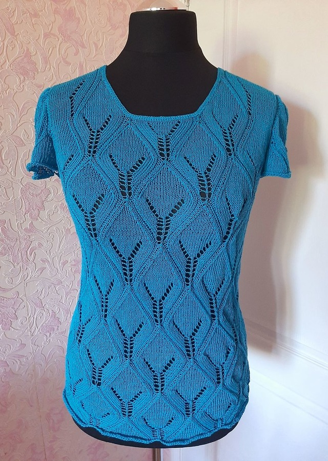

Темна бірюза

Розмір 46-48
Довжина виробу : 59 см Колір : Темна бірюза Колір яскравий,насичений.
Склад : 100% італійський котон
Добре пропускає повітря, дихає та добре вбирає вологу. Тому її цілком комфортно носити у спекотну пору року.
100 % італійський котон міцний,невибагливий у догляді,може використовуватися довгі роки.
Ручне прання при температурі не більше 30 градусів,сушити в горизонталі,щоб уникнути деформації виробу.